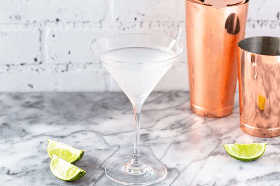

Daiquiri
There's been a couple different theories as to how the daiquiri came to be the popular drink it is today. Some believe it was created in the late 1800's as a medicinal drink in Cuba. Others say it's popularity stems from the U.S. in the 1940's when an FDR policy encouraged trade between the U.S., Latin America, the Caribbean, and Cuba. A good way to taste new rums, the daiquiri started as a simple drink with only 3 ingredients before evolving to use the ingredients it can be found with today.

1 To start, add your ice and your ingredients to a cocktail shaker
2 Give it a good shake before straining into a chilled cocktail glass and garnish with a lime wedge
3 Drink and enjoy!
4 Alternatively, you can put your ingredients into a blender if you prefer a frozen cocktail. Blend until ice is crushed, pour into prepared glass and enjoy!